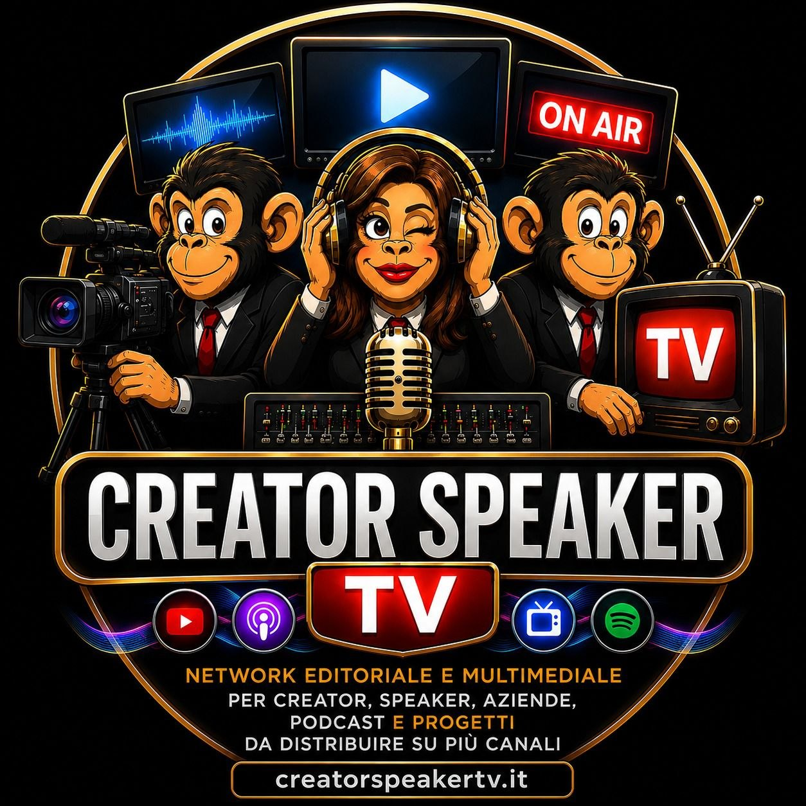

Vetrina creator
Pagina pubblica per presentare canali, pacchetti, video e profili professionali.

CreatorSpeaker TV porta vetrina, media studio, offerte affiliate e area creator dentro una zona Velora. Questa versione e pronta per testare pubblicazione statica e accesso con identita unica Velora.
Pagina pubblica per presentare canali, pacchetti, video e profili professionali.
Upload, archivio e gestione contenuti restano collegati al login Velora e alle API protette.
Offerte e automazioni sono mostrate in beta statica, con funzioni server abilitate solo dopo integrazione backend.
Questa demo verifica che script, layout e asset funzionino dentro una cartella pubblicabile su Velora.